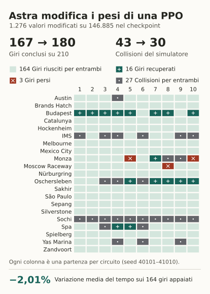
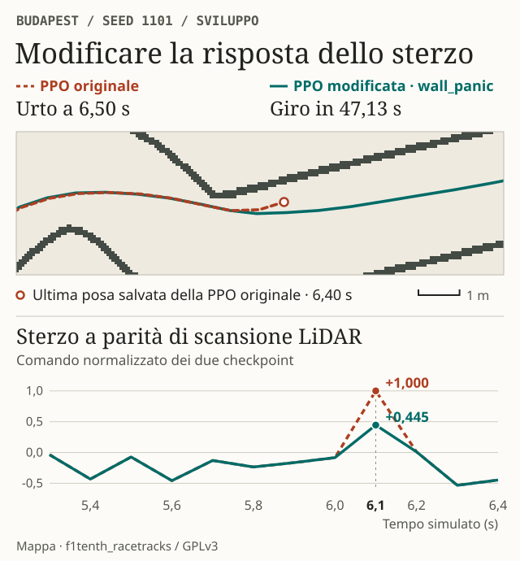
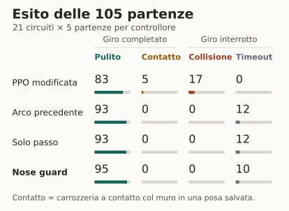
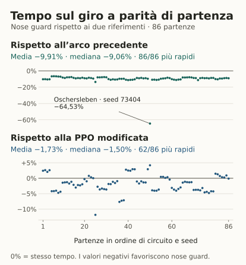

La prova sulla rete già addestrata
Il punto di partenza era una policy PPO del nostro progetto F1TENTH, sviluppato con Manuel Andruccioli e Giacomo Totaro all’Università di Bologna. A ogni passo l’auto misura la distanza dagli ostacoli lungo 1.080 raggi laser. La rete trasforma questa scansione in due comandi, sterzo e velocità. La richiesta iniziale ad Astra era di farla andare più veloce e ridurre gli schianti intervenendo sui suoi raw weights, i numeri salvati nelle matrici dei pesi e nei vettori di bias. Progetto originale · Prompt originali e protocollo
In Codex, GPT-6 Astra ha letto quei tensori, esaminato le attivazioni durante la guida e scritto il codice che assegna i nuovi valori a una copia del checkpoint. I risultati in simulazione hanno guidato successive revisioni. Nessuna di queste modifiche ha richiesto un ciclo di addestramento. L’esperimento riprende la modalità con strumenti e feedback descritta da Rikiya Takehi e colleghi. Sparks of Weight-Space Programming


Che cosa ha scritto Astra nei pesi
Nelle tracce di alcuni incidenti compariva una manovra riconoscibile. L’auto era già vicina al muro sinistro e la rete chiedeva un’altra sterzata brusca verso sinistra. Due neuroni del primo strato contribuivano a quel comando. La stessa combinazione si attivava anche in tornanti percorsi correttamente, dove attenuare lo sterzo avrebbe potuto mandare l’auto larga.
Astra ha quindi collegato la correzione a una misura dello spazio disponibile. Ha riutilizzato due neuroni che, nelle osservazioni di sviluppo, producevano valori quasi costanti. Una riga di pesi calcola un segnale a partire dalla distanza media di 40 raggi rivolti a sinistra. A 50 cm dal muro, l’attivazione progettata vale circa −0,96. A 30 cm vale circa +0,96. Nel secondo strato questo segnale si combina con quelli dei due neuroni di sterzo. Quando coincidono muro vicino e richiesta di una forte svolta a sinistra, il contributo al comando finale riduce la sterzata.
Astra ha compensato il precedente contributo del neurone, poi ha scritto questi valori nella matrice del primo strato e nel suo bias. Gli indici da 880 a 919 identificano i 40 raggi.
w1[15, :] = 0.0
w1[15, 880:920] = -7.5
b1[15] = -292.0
A Budapest si può isolare l’effetto sui numeri. Prendendo la stessa scansione registrata a 6,10 secondi e passandola ai due checkpoint, il comando normalizzato scende da +1,000 a +0,445. Poi si può osservare cosa succede lasciando guidare ciascuna rete. L’originale urta il muro a 6,50 secondi. Quella con la sola correzione dello sterzo completa il giro in 47,13 secondi. Generatore dei pesi · Report della correzione


Quanto conta lo sterzo e quanto la velocità?
Congelati i pesi, abbiamo provato anche la correzione dello sterzo da sola. Ha portato i completamenti da 167 a 179 su 210, con tempo medio appaiato praticamente invariato. Per ottenere la variante veloce, Astra ha poi incrementato un solo bias di 0,016, equivalente a +0,2 m/s nel comando di velocità prima della saturazione. È questa variante a raggiungere i 180 giri e il −2,01% della figura 1. In totale cambiano lo 0,87% dei 146.885 coefficienti del checkpoint, pari all’1,74% dei coefficienti dell’attore che decide le azioni.
Il compromesso dipende dall’obiettivo. Una modifica precedente, più prudente, aveva completato 184 giri sullo stesso test, ma impiegava il 3,78% in più dell’originale sui rispettivi giri appaiati. In una verifica successiva, anticipare la correzione del muro e filtrare quattro righe dei pesi ha portato i giri completati senza contatti geometrici rilevati da 172 a 177, a passo sostanzialmente invariato. Primi esperimenti · Tentativi su velocità e drift · Verifica della carrozzeria
Il secondo esperimento parte da zero
Astra ha anche costruito una rete più piccola, partendo da formule geometriche. I suoi 28.427 coefficienti descrivono lo spazio necessario per percorrere 17 possibili curvature con un’auto lunga 58 cm e larga 31 cm. Un dettaglio si è rivelato decisivo. In curva, la direzione del moto può differire da quella del muso. I primi archi, calcolati senza deriva, fallivano tutte e tre le prove iniziali. Incorporando nei pesi la deriva prevista dalle equazioni del veicolo, la rete ha completato tutte e tre le prove. Restava da recuperare velocità e da gestire le partenze strette. Dalla geometria ai tensori


early_smooth. Il modello con la sola modifica del passo completa 93 giri, quanti la rete geometrica precedente. La modifica alla partenza porta il totale a 95.

Nei 95 giri completati dal modello finale, la carrozzeria è rimasta separata dai pixel dei muri a ogni posa controllata, una ogni 0,01 s. Il margine minimo registrato è di 0,85 cm sulla mappa. Due dei sette timeout storici sono diventati giri puliti, a IMS e Monza. Il risultato riguarda un giro simulato, con nuovi punti di partenza e rumore su piste note. Il drift controllato e il trasferimento su un veicolo reale restano da dimostrare. Confronto finale e tentativi scartati · Codice, pesi e dati